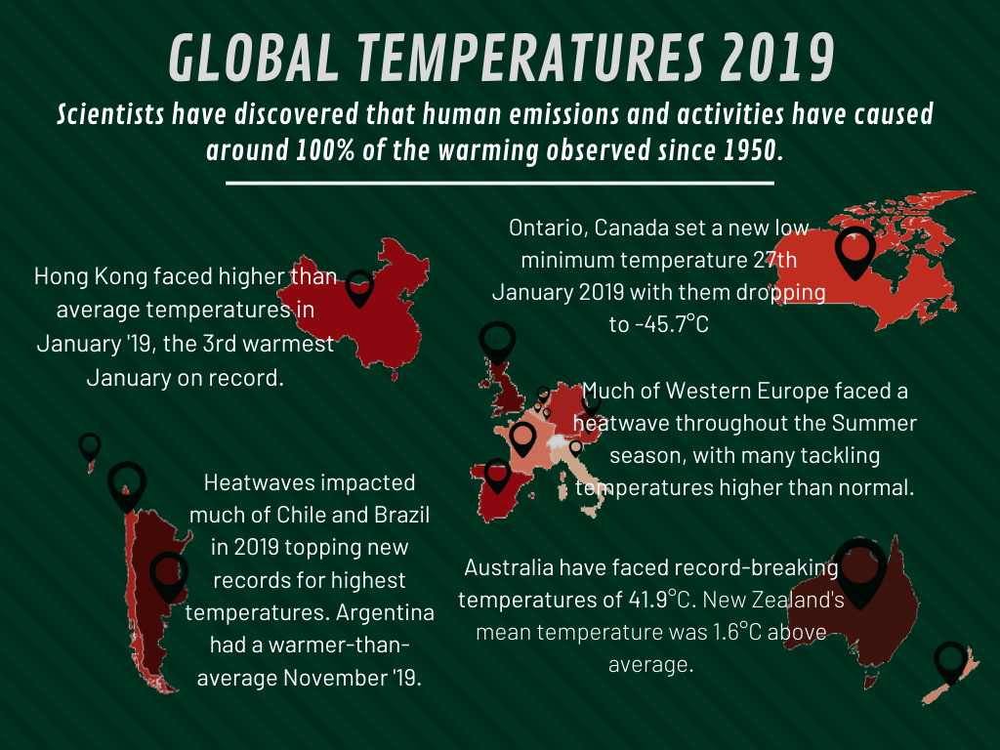

This decade we have witnessed sea levels rising, approximately 89% of
The Great Barrier Reef is dead or dying, wildfires, heatwaves, tropical cyclones
and flooding. Not only has this seen devastation within environments throughout
the world, but there has been a significant loss of life and economic losses due
to these effects of climate change.
Natural disasters & Increasing temperatures
Although natural disasters cannot be directly linked to being an impact
of climate change, scientists have predicted that
"Long-term effects of climate change will include a decrease in sea ice and
an increase in permafrost thawing, an increase in heatwaves and heavy precipitation,
and decreased water resources in semi-arid regions."
The graph below shows the annual number of natural disaster events globally from
2008 to 2018.
2018 has contained the third-highest number of natural disasters
in the past 10 years.
Climate change is nothing new on Earth, which can be seen in the
geological record. The concern now is the rapid rate and size that climate change
is occurring now. USGS
explains that the scientific community is aware of the Earth's climate change
because of the trends seen in instrumented climate record and the changes observed
in physical and biological systems.
"The instrumental record of climate change is derived from thousands of temperature
and precipitation recording stations around the world. We have very high confidence
in these records as a whole. The evidence of a warming trend over the past century
is unequivocal."
- USGS
Created by Lori Perkins from the NASA visualisation team, this video shows a
progression of changing global surface temperature anomalies from 1880 through
to 2018.
Higher than normal temperatures are shown in red and lower than normal temperatures
are shown in blue, with the temperatures being scaled in degree Celsius.
With increasing temperatures each year, 2018 was the fourth warmest year since 1880
according to NASA, NOAA, with global temperatures being 0.83 warmer than the 1951
to 1980 mean.
Possibly continuing to increase, the first month of 2019 was characterised by
warmer-than-average conditions across much of the worlds surface, with the
most notable warm temperature anomalies being present across much of Australia
and parts of north-eastern and south-western Asia. The temperature
departures from average were 4.0°C above average or higher.

What is the importance of these temperatures?
Scientists say that the temperatures are rising worldwide
due to greenhouse gases trapping more heat into the atmosphere. A visible impact of this
is that droughts are becoming longer and more extreme around the world, tropical storms
are becoming more severe due to warmer ocean water temperatures and sea levels are rising,
threatening coastal communities.
There have been far too many natural disasters, that could have been a possible
impact of climate change, to name. However, the current ongoing natural disaster occurring
is the bush-fires currently engulfing much of New South Wales in Australia.
To give a glimpse into the devastation caused by the bush-fires, below shows
a satellite view comparison of Australia's New South Wales in 2016, compared to now.
New South Wales, Australia
The bushfires began in late August 2019 with multiple states experiencing bushfires.
By December 21st 2019, the fires had burnt over 3,000,000 hectares,
destroyed over 700 houses and killed at least 9 people with one unaccounted
for.
As of December 29th 2019, almost 100 fires burning across Australia, many uncontained and
continuing to threaten lives. Some flames have been reported to be as high as
70m in height, 5m taller than the Sydney Opera House.
Smoke from these fires have also reached Sydney, causing severe air pollution
in the country's largest city.
It was reported that the Australian authorities were concerned that the
bushfires could jeopardize Sydney's drinking water supply from direct damage
from the fire as well as contamination risk from ash run-off.